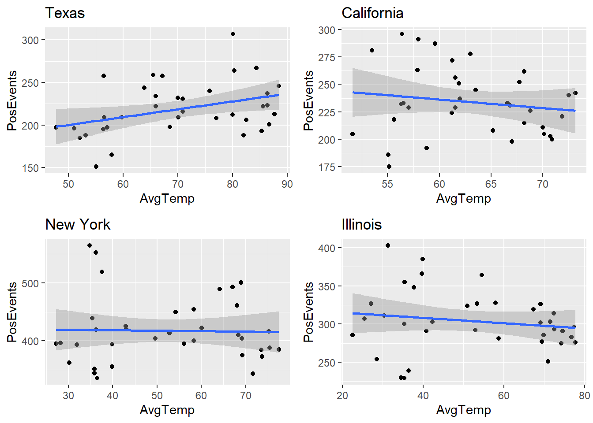
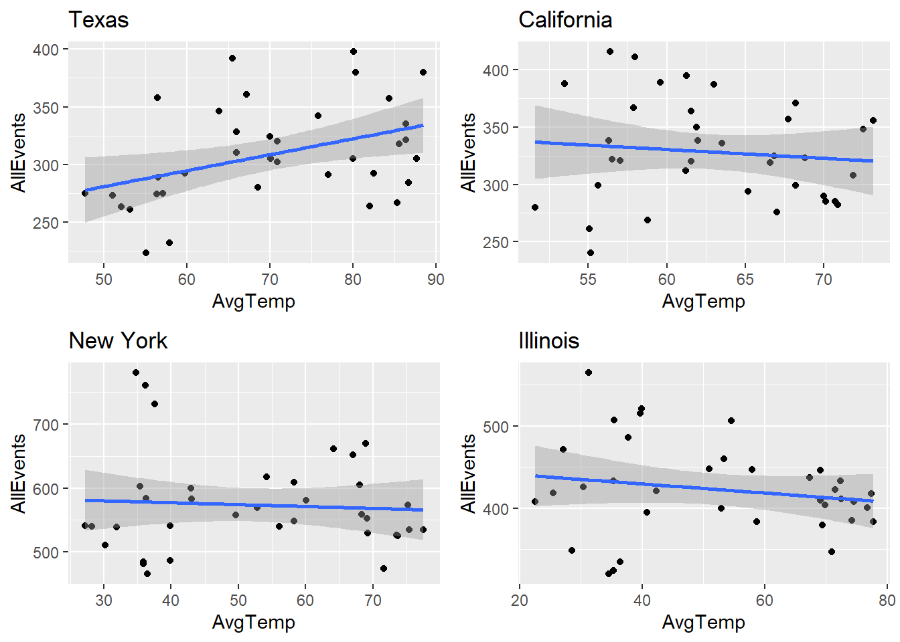
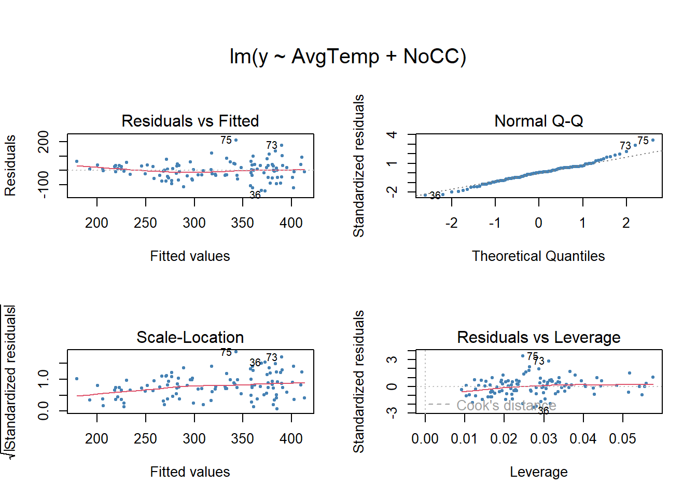

summarize_weather_data_old <- function(w) {
# select relevant columns only
w_sum =
w |> select(DATE,Sunrise, Sunset, HourlySkyConditions,HourlyVisibility)
# extract date/hour and cloud coverage column
w_sum["datehour"] <- substr(DATE, 0,13)
w_sum["cc"] <- ifelse (grepl("FEW|CLR", HourlySkyConditions), 1, -1)
# summarize the cloud coverage and visibility per hour
w_sum1 =
w_sum %>%
group_by(datehour) %>%
summarise(
CC=sum(cc),
Visibility=mean(as.numeric(HourlyVisibility))
)
# summary the cloudcoverage and visibility per month
attach(w_sum1)
w_sum1["Year"] = as.numeric(substr(datehour, 0,4))
w_sum1["Month"] = as.numeric(substr(datehour,6,7))
w_sum1["NoCC"] = ifelse(CC > 0, 1, 0)
w_sum2 =
w_sum1 %>%
filter (!is.na(Visibility)) %>%
group_by(Year,Month) %>%
summarise(
NoCC = sum(NoCC),
AvgVisibility = mean(Visibility)
)
return (w_sum2)
}
summarize_weather_data <- function(w) {
# select relevant columns only
w_sum =
w |> select(DATE.x,HourlySkyConditions,HourlyVisibility)
# extract date/hour and cloud coverage column
attach(w_sum)
w_sum["datehour"] <- substr(DATE.x, 0,13)
w_sum["cc"] <- ifelse (grepl("FEW|CLR", HourlySkyConditions), 1, -1)
# summarize the cloud coverage and visibility per hour
w_sum1 =
w_sum %>%
group_by(datehour) %>%
summarise(
CC=sum(cc),
Visibility=mean(as.numeric(HourlyVisibility))
)
# summary the cloudcoverage and visibility per month
attach(w_sum1)
w_sum1["Year"] = as.numeric(substr(datehour, 0,4))
w_sum1["Month"] = as.numeric(substr(datehour,6,7))
w_sum1["NoCC"] = ifelse(CC > 0, 1, 0)
w_sum2 =
w_sum1 %>%
filter (!is.na(Visibility)) %>%
group_by(Year,Month) %>%
summarise(
NoCC = sum(NoCC),
AvgVisibility = mean(Visibility)
)
return (w_sum2)
}
summarize_state_weather <- function(w) {
w_sum =
w %>%
group_by(Year,Month) %>%
summarise(
NoCC = mean(NoCC),
AvgVisibility = mean(AvgVisibility)
)
return (w_sum)
}EPPS 6323: Semester Project
Weather has impact on reported news/events
Library setup
Data load functions
remove_night_records <- function(ds) {
# create a table of sunrise and sunset time per day
ss = ds %>% select(DATE, Sunrise, Sunset) %>% filter(!is.na(Sunrise))
attach(ss)
# deduct 1 hour before sunrise, and add 1 hour after sunset since
# there is still daylight before and after official sunrise and sunset
ss["Sunrise_adj"] = Sunrise - 100
ss["Sunset_adj"] = Sunset + 100
attach(ss)
ss["Rise"] =
sprintf("%s0%s:%s:00",
substr(DATE,1,11),substr(Sunrise_adj,1,1),substr(Sunrise_adj,2,3))
ss["Set"] =
sprintf("%s%s:%s:00",
substr(DATE,1,11),substr(Sunset_adj,1,2),substr(Sunset_adj,3,4))
ss["SS_day"] = substr(DATE,1,10)
if (nrow(ss) != 365) print('Data set does not have complete sunrise/sunset information')
# merge hourly records with sunrise/sunset daily records
attach(ds)
ds["day"] = substr(DATE,1,10)
ds = left_join(ds, ss, by = join_by(day == SS_day))
ds = ds %>% filter(DATE >= Rise & DATE <= Set)
return (ds)
}process_weather_data <- function(file_name) {
weather_ds2 = read.csv(file_name) |>
select(DATE,Sunrise, Sunset, HourlySkyConditions,HourlyVisibility)
return (remove_night_records(weather_ds2))
}Load and cleanse GDELT data
gdelt = read.csv('Gdelt_data.csv')
#gdelt = read.csv('Gdelt_data_with_adj.csv')
attach(gdelt)
gdelt["Year"] = as.numeric(substr(as.character(MonthYear),1,4))
gdelt["Month"] = as.numeric(substr(as.character(MonthYear),5,6))
gdelt["PosEvents"] <- Verbal.Cooperation+Material.Cooperation
gdelt["NegEvents"] <- Verbal.Conflict+Material.Conflict
attach(gdelt)
gdelt["AllEvents"] <- PosEvents + NegEventsLoad average temperature data
weather_ds1 = read.csv('Temp_data.csv')
weather_temp =
weather_ds1 %>%
group_by(Year,State, Month_num) %>%
summarise(AvgTemp=mean(Mean.Temp)) Load, cleanse and merge weather data sets
# Illinois weather, using Chicago only for Illinos,
# because .csv doesn't have complete sunrise/sunset info
weather_IL_cc = summarize_weather_data(process_weather_data('2019 chicago weather.csv'))
weather_IL_cc = rbind(summarize_weather_data(process_weather_data('2017 chicago.csv')),weather_IL_cc)[1] "Data set does not have complete sunrise/sunset information"weather_IL_cc = rbind(summarize_weather_data(process_weather_data('2018 chicago.csv')),weather_IL_cc)
weather_IL =
left_join(summarize_state_weather(weather_IL_cc),
weather_temp %>% filter (State == 'Illinois'),
by = join_by(Year == Year, Month == Month_num))
# New York weather (NYC, Buffalo)
# Yonkers has no complete sunrise and sunset information
weather_NY_cc = summarize_weather_data(process_weather_data('2019 NY buffalo weather.csv'))
weather_NY_cc = rbind(summarize_weather_data(process_weather_data('2019 NY nyc weather.csv')),weather_NY_cc)
weather_NY_cc = rbind(summarize_weather_data(process_weather_data('2017 buffalo.csv')),weather_NY_cc)
weather_NY_cc = rbind(summarize_weather_data(process_weather_data('2017 nyc.csv')),weather_NY_cc)
weather_NY_cc = rbind(summarize_weather_data(process_weather_data('2018 buffalo.csv')),weather_NY_cc)
weather_NY_cc = rbind(summarize_weather_data(process_weather_data('2018 nyc.csv')),weather_NY_cc)
weather_NY =
left_join(summarize_state_weather(weather_NY_cc),
weather_temp %>% filter (State == 'New York'),
by = join_by(Year == Year, Month == Month_num))
# California weather
weather_CA_cc = summarize_weather_data(process_weather_data('2019 CA san diego weather.csv'))
weather_CA_cc = rbind(summarize_weather_data(process_weather_data('2019 CA san francisco weather.csv')),weather_CA_cc)
weather_CA_cc = rbind(summarize_weather_data(process_weather_data('2019 CA san jose weather.csv')), weather_CA_cc)
weather_CA_cc = rbind(summarize_weather_data(process_weather_data('2019 los angeles weather.csv')), weather_CA_cc)
weather_CA_cc = rbind(summarize_weather_data(process_weather_data('2017 san diego.csv')),weather_CA_cc)
weather_CA_cc = rbind(summarize_weather_data(process_weather_data('2017 san francisco weather.csv')),weather_CA_cc)
weather_CA_cc = rbind(summarize_weather_data(process_weather_data('2017 san jose.csv')), weather_CA_cc)
weather_CA_cc = rbind(summarize_weather_data(process_weather_data('2017 los angeles weather.csv')), weather_CA_cc)
weather_CA_cc = rbind(summarize_weather_data(process_weather_data('2018 san diego.csv')),weather_CA_cc)
weather_CA_cc = rbind(summarize_weather_data(process_weather_data('2018 san francisco.csv')),weather_CA_cc)
weather_CA_cc = rbind(summarize_weather_data(process_weather_data('2018 san jose.csv')), weather_CA_cc)
weather_CA_cc = rbind(summarize_weather_data(process_weather_data('2018 los angeles.csv')), weather_CA_cc)
weather_CA =
left_join(summarize_state_weather(weather_CA_cc),
weather_temp %>% filter (State == 'California'),
by = join_by(Year == Year, Month == Month_num))
# Texas weather
weather_TX_cc = summarize_weather_data(process_weather_data('2019 TX dallas weather.csv'))
weather_TX_cc = rbind(summarize_weather_data(process_weather_data('2019 TX houston weather.csv')),weather_TX_cc)
weather_TX_cc= rbind(summarize_weather_data(process_weather_data('2019 TX san antonio weather.csv')), weather_TX_cc)
weather_TX_cc = rbind(summarize_weather_data(process_weather_data('2017 houston.csv')),weather_TX_cc)
weather_TX_cc = rbind(summarize_weather_data(process_weather_data('2017 dallas.csv')),weather_TX_cc)
weather_TX_cc= rbind(summarize_weather_data(process_weather_data('2017 san antonio.csv')), weather_TX_cc)
weather_TX_cc = rbind(summarize_weather_data(process_weather_data('2018 houston.csv')),weather_TX_cc)
weather_TX_cc = rbind(summarize_weather_data(process_weather_data('2018 dallas.csv')),weather_TX_cc)
weather_TX_cc= rbind(summarize_weather_data(process_weather_data('2018 san antonio.csv')), weather_TX_cc)
weather_TX =
left_join(summarize_state_weather(weather_TX_cc),
weather_temp %>% filter (State == 'Texas'),
by = join_by(Year == Year, Month == Month_num))Join weather and GDELT data per state
combine_weather_and_gdelt <- function (state_data,state_name) {
attach(gdelt)
gdelt_state_data = gdelt %>%
select (Year, Month, PosEvents, NegEvents, AllEvents) %>% filter(State == state_name)
merge_ds =
left_join(state_data, gdelt_state_data,
by = join_by(Year == Year, Month == Month))
return(merge_ds)
}dataset_IL = combine_weather_and_gdelt(weather_IL,"USIL")
dataset_CA = combine_weather_and_gdelt(weather_CA,"USCA")
dataset_NY = combine_weather_and_gdelt(weather_NY,"USNY")
dataset_TX = combine_weather_and_gdelt(weather_TX,"USTX")
dataset_ALL = rbind(dataset_IL,dataset_CA)
dataset_ALL = rbind(dataset_ALL,dataset_NY)
#dataset_ALL = rbind(dataset_ALL,dataset_TX) #- exlude Texas because it has inverse correlation
#attach(dataset_ALL)
#dataset_ALL[AdjAllEvents] =
# if (State == 'California') { AllEvents * .64
# } else if (State == 'Illinois') { AllEvents * 2.2
# } else if (State == 'New York') { AllEvents * 1.33
# } else if (State == 'Texas') { AllEvents * .83 }Regression functions
lm_metrics <- function(ds,x,y) {
# run the model
attach(ds)
lm.fit=lm(y~x, data=ds)
summary(lm.fit)
#confint(lm.fit)
#coef <- round(coef(lm.fit, 2))
#text(0, 0, paste(": Y = ", coef[1], "+", coef[2], "x"), cex = 0.88, pos = 2, col = "darkgreen")
}
#-------------- POSITIVE EVENTS ------------------
lm_plot_NoCC_PosEvents <- function() {
p1 <- ggplot(dataset_TX,aes(y=PosEvents,x=NoCC))+geom_point()+geom_smooth(method="lm")+ggtitle("Texas")
p2 <- ggplot(dataset_CA,aes(y=PosEvents,x=NoCC))+geom_point()+geom_smooth(method="lm")+ggtitle("California")
p3 <- ggplot(dataset_NY,aes(y=PosEvents,x=NoCC))+geom_point()+geom_smooth(method="lm")+ggtitle("New York")
p4 <- ggplot(dataset_IL,aes(y=PosEvents,x=NoCC))+geom_point()+geom_smooth(method="lm")+ggtitle("Illinois")
grid.arrange(p1, p2, p3, p4, ncol = 2, nrow = 2)
}
lm_plot_AvgTemp_PosEvents <- function() {
p1 <- ggplot(dataset_TX,aes(y=PosEvents,x=AvgTemp))+geom_point()+geom_smooth(method="lm")+ggtitle("Texas")
p2 <- ggplot(dataset_CA,aes(y=PosEvents,x=AvgTemp))+geom_point()+geom_smooth(method="lm")+ggtitle("California")
p3 <- ggplot(dataset_NY,aes(y=PosEvents,x=AvgTemp))+geom_point()+geom_smooth(method="lm")+ggtitle("New York")
p4 <- ggplot(dataset_IL,aes(y=PosEvents,x=AvgTemp))+geom_point()+geom_smooth(method="lm")+ggtitle("Illinois")
grid.arrange(p1, p2, p3, p4, ncol = 2, nrow = 2)
}
lm_plot_AvgVisibility_PosEvents <- function() {
p1 <- ggplot(dataset_TX,aes(y=PosEvents,x=AvgVisibility))+geom_point()+geom_smooth(method="lm")+ggtitle("Texas")
p2 <- ggplot(dataset_CA,aes(y=PosEvents,x=AvgVisibility))+geom_point()+geom_smooth(method="lm")+ggtitle("California")
p3 <- ggplot(dataset_NY,aes(y=PosEvents,x=AvgVisibility))+geom_point()+geom_smooth(method="lm")+ggtitle("New York")
p4 <- ggplot(dataset_IL,aes(y=PosEvents,x=AvgVisibility))+geom_point()+geom_smooth(method="lm")+ggtitle("Illinois")
grid.arrange(p1, p2, p3, p4, ncol = 2, nrow = 2)
}
#-------------- NEGATIVE EVENTS ------------------
lm_plot_NoCC_NegEvents <- function() {
p1 <- ggplot(dataset_TX,aes(y=NegEvents,x=NoCC))+geom_point()+geom_smooth(method="lm")+ggtitle("Texas")
p2 <- ggplot(dataset_CA,aes(y=NegEvents,x=NoCC))+geom_point()+geom_smooth(method="lm")+ggtitle("California")
p3 <- ggplot(dataset_NY,aes(y=NegEvents,x=NoCC))+geom_point()+geom_smooth(method="lm")+ggtitle("New York")
p4 <- ggplot(dataset_IL,aes(y=NegEvents,x=NoCC))+geom_point()+geom_smooth(method="lm")+ggtitle("Illinois")
grid.arrange(p1, p2, p3, p4, ncol = 2, nrow = 2)
}
lm_plot_AvgTemp_NegEvents <- function() {
p1 <- ggplot(dataset_TX,aes(y=NegEvents,x=AvgTemp))+geom_point()+geom_smooth(method="lm")+ggtitle("Texas")
p2 <- ggplot(dataset_CA,aes(y=NegEvents,x=AvgTemp))+geom_point()+geom_smooth(method="lm")+ggtitle("California")
p3 <- ggplot(dataset_NY,aes(y=NegEvents,x=AvgTemp))+geom_point()+geom_smooth(method="lm")+ggtitle("New York")
p4 <- ggplot(dataset_IL,aes(y=NegEvents,x=AvgTemp))+geom_point()+geom_smooth(method="lm")+ggtitle("Illinois")
grid.arrange(p1, p2, p3, p4, ncol = 2, nrow = 2)
}
lm_plot_AvgVisibility_NegEvents <- function() {
p1 <- ggplot(dataset_TX,aes(y=NegEvents,x=AvgVisibility))+geom_point()+geom_smooth(method="lm")+ggtitle("Texas")
p2 <- ggplot(dataset_CA,aes(y=NegEvents,x=AvgVisibility))+geom_point()+geom_smooth(method="lm")+ggtitle("California")
p3 <- ggplot(dataset_NY,aes(y=NegEvents,x=AvgVisibility))+geom_point()+geom_smooth(method="lm")+ggtitle("New York")
p4 <- ggplot(dataset_IL,aes(y=NegEvents,x=AvgVisibility))+geom_point()+geom_smooth(method="lm")+ggtitle("Illinois")
grid.arrange(p1, p2, p3, p4, ncol = 2, nrow = 2)
}
#-------------- ALL EVENTS ------------------
lm_plot_NoCC_AllEvents <- function() {
p1 <- ggplot(dataset_TX,aes(y=AllEvents,x=NoCC))+geom_point()+geom_smooth(method="lm")+ggtitle("Texas")
p2 <- ggplot(dataset_CA,aes(y=AllEvents,x=NoCC))+geom_point()+geom_smooth(method="lm")+ggtitle("California")
p3 <- ggplot(dataset_NY,aes(y=AllEvents,x=NoCC))+geom_point()+geom_smooth(method="lm")+ggtitle("New York")
p4 <- ggplot(dataset_IL,aes(y=AllEvents,x=NoCC))+geom_point()+geom_smooth(method="lm")+ggtitle("Illinois")
grid.arrange(p1, p2, p3, p4, ncol = 2, nrow = 2)
}
lm_plot_AvgTemp_AllEvents <- function() {
p1 <- ggplot(dataset_TX,aes(y=AllEvents,x=AvgTemp))+geom_point()+geom_smooth(method="lm")+ggtitle("Texas")
p2 <- ggplot(dataset_CA,aes(y=AllEvents,x=AvgTemp))+geom_point()+geom_smooth(method="lm")+ggtitle("California")
p3 <- ggplot(dataset_NY,aes(y=AllEvents,x=AvgTemp))+geom_point()+geom_smooth(method="lm")+ggtitle("New York")
p4 <- ggplot(dataset_IL,aes(y=AllEvents,x=AvgTemp))+geom_point()+geom_smooth(method="lm")+ggtitle("Illinois")
grid.arrange(p1, p2, p3, p4, ncol = 2, nrow = 2)
}
lm_plot_AvgVisibility_AllEvents <- function() {
p1 <- ggplot(dataset_TX,aes(y=AllEvents,x=AvgVisibility))+geom_point()+geom_smooth(method="lm")+ggtitle("Texas")
p2 <- ggplot(dataset_CA,aes(y=AllEvents,x=AvgVisibility))+geom_point()+geom_smooth(method="lm")+ggtitle("California")
p3 <- ggplot(dataset_NY,aes(y=AllEvents,x=AvgVisibility))+geom_point()+geom_smooth(method="lm")+ggtitle("New York")
p4 <- ggplot(dataset_IL,aes(y=AllEvents,x=AvgVisibility))+geom_point()+geom_smooth(method="lm")+ggtitle("Illinois")
grid.arrange(p1, p2, p3, p4, ncol = 2, nrow = 2)
}#lm_metrics(dataset_TX,NoCC,AllEvents)
lm_metrics(dataset_TX,AvgTemp,AllEvents)
Call:
lm(formula = y ~ x, data = ds)
Residuals:
Min 1Q Median 3Q Max
-64.952 -24.851 -5.712 25.144 89.721
Coefficients:
Estimate Std. Error t value Pr(>|t|)
(Intercept) 211.8495 38.3715 5.521 3.61e-06 ***
x 1.3820 0.5378 2.570 0.0147 *
---
Signif. codes: 0 '***' 0.001 '**' 0.01 '*' 0.05 '.' 0.1 ' ' 1
Residual standard error: 40.19 on 34 degrees of freedom
Multiple R-squared: 0.1626, Adjusted R-squared: 0.138
F-statistic: 6.604 on 1 and 34 DF, p-value: 0.01473#lm_metrics(dataset_TX,AvgVisibility,PosEvents)Linear regression - Plots
lm_plot_NoCC_PosEvents()
lm_plot_AvgTemp_PosEvents()
lm_plot_AvgVisibility_PosEvents()
lm_plot_NoCC_NegEvents()lm_plot_AvgTemp_NegEvents()lm_plot_AvgVisibility_NegEvents()lm_plot_NoCC_AllEvents()
lm_plot_AvgTemp_AllEvents()
lm_plot_AvgVisibility_AllEvents()Multiple Linear Regression
mlm_plot <- function(ds,y,title) {
# run the model and plot
attach(ds)
mlm.fit=lm(y~AvgTemp+NoCC)
#mlm.fit=lm(y~AvgTemp+NoCC+AvgVisibility)
#par(mfrow=c(3,3), oma = c(0,0,4,0))
#check_model(mlm.fit)
par(mfrow=c(2,2), oma = c(0,0,4,0))
plot(mlm.fit,pch=20, cex=.8, col="steelblue", )
#title(main = title, outer=TRUE, line=-1)
# plote each of the regression line
#par(mfrow=c(2,2))
lm.fit_CC =lm(y~NoCC, data=ds)
plot(y~NoCC, data=ds, pch=19, cex=.8, col="steelblue", main='NoCC', cex.main=1)
abline(lm.fit_CC,lwd=1,col="red")
lm.fit_AT =lm(y~AvgTemp, data=ds)
plot(y~AvgTemp, data=ds, pch=19, cex=.8, col="steelblue", main='AvgTemp', cex.main=1)
abline(lm.fit_AT,lwd=1,col="red")
if (FALSE)
{
lm.fit_AV =lm(y~AvgVisibility, data=ds)
plot(y~AvgVisibility, data=ds, pch=19, cex=.8, col="steelblue", main='AvgVisibility', cex.main=1)
abline(lm.fit_AV,lwd=1,col="red")
}
# Uses coefplot to plot coefficients. Note the line at 0.
arm::coefplot(mlm.fit)
summary(mlm.fit)
#confint(mlm.fit)
#cor(AvgTemp,NoCC,method="pearson")
# this needs a big plot area to render
#performance(mlm.fit)
#check_model(mlm.fit)
}#mlm_plot(dataset_TX, PosEvents, "PosEvents")
#mlm_plot(dataset_TX, NegEvents, "Negative Events")
mlm_plot(dataset_ALL, PosEvents, "PosEvents")
Call:
lm(formula = y ~ AvgTemp + NoCC)
Residuals:
Min 1Q Median 3Q Max
-143.510 -35.908 1.871 34.305 210.331
Coefficients:
Estimate Std. Error t value Pr(>|t|)
(Intercept) 383.9515 22.8052 16.836 < 2e-16 ***
AvgTemp 3.2755 0.6386 5.129 1.34e-06 ***
NoCC -1.1447 0.1206 -9.491 8.50e-16 ***
---
Signif. codes: 0 '***' 0.001 '**' 0.01 '*' 0.05 '.' 0.1 ' ' 1
Residual standard error: 62.45 on 105 degrees of freedom
Multiple R-squared: 0.4996, Adjusted R-squared: 0.4901
F-statistic: 52.42 on 2 and 105 DF, p-value: < 2.2e-16#mlm_plot(dataset_ALL, NegEvents, "NegEvents")
#mlm_plot(dataset_ALL, AllEvents, "All Events")
#ggplot(radial,aes(y=NTAV,x=age,color=weight))+geom_point()+stat_smooth(method="lm",se=FALSE)